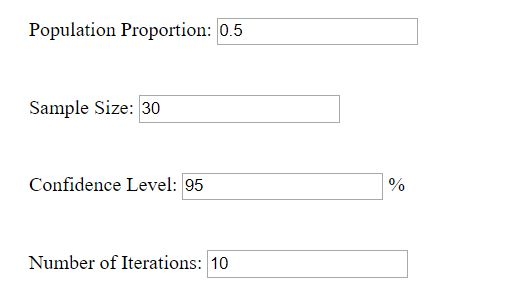
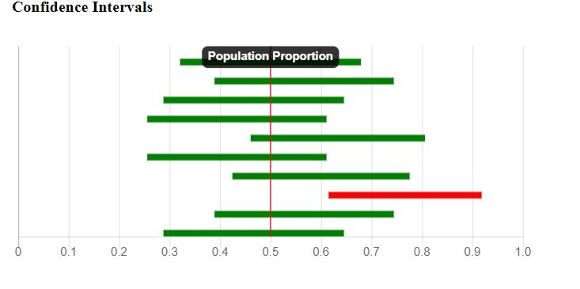

When opening the page, the user is given four input boxes, as shown below:
The default values are displayed for each.
For the population proportion, users may input any number between 0 and 1.
For the sample size, users may enter any positive whole number.
For the confidence level, users may enter any positive number less than or equal to 99.
For the number of iterations, users may enter any positive whole number, with a maximum value of 10000
Once the user has inputed their desired values, they click the enter button and a graph displaying the confidence intervals for their values appears.
Here is an example of a generated confidence interval graph:
To create a different graph from the same values, the user clicks enter again and a new sample set is generated and the resulting graph is displayed.